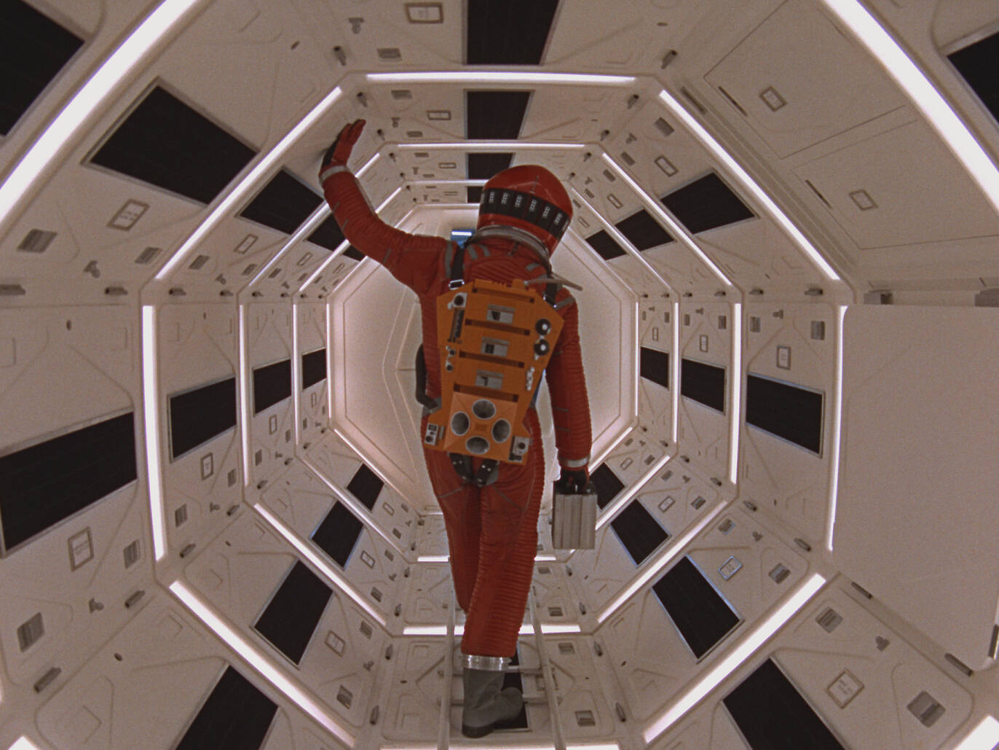
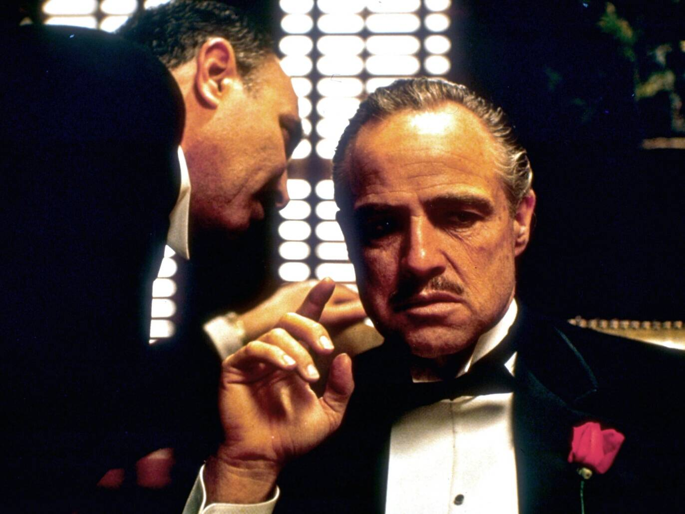

|  | 2001:A Space OdyseyThe greatest film ever made began with the meeting of two brilliant minds: Stanley Kubrick and sci-fi seer Arthur C Clarke. ‘I understand he’s a nut who lives in a tree in India somewhere,’ noted Kubrick when Clarke’s name came up – along with those of Isaac Asimov, Robert A Heinlein and Ray Bradbury – as a possible writer for his planned sci-fi epic. |
|  | God FatherFrom the wise guys of Goodfellas to The Sopranos, all crime dynasties that came after The Godfather are descendants of the Corleones: Francis Ford Coppola’s magnum opus is the ultimate patriarch of the Mafia genre. |
Citizen KaneBack in the headlines thanks to David Fincher’s brilliantly acerbic making-of drama Mank, Citizen Kane always finds a way to renew itself for a new generation of film lovers. For newbies, the journey of its bulldozer of a protagonist – played with inexhaustible force by actor-director-wunderkind Orson Welles – from unloved child to thrusting entrepreneur to press baron to populist feels entirely au courant (in unconnected news, Donald Trump came out as a superfan). |